Activity: Computing mass properties of an assembly
When you complete this activity, you will be able to change material types in parts, and then compute the center of mass in an assembly.
The activity consists of the following:
-
Editing a part in the context of an assembly.
-
Changing the materials for each part.
-
Computing the mass properties for the assembly.
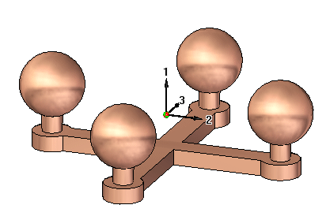
Open and activate all the parts in the assembly mass.asm located in the folder where the activity files are located.
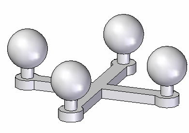
The assembly consists of five parts: the base and the four posts with spheres. If the posts were identical, the assembly could have been made with just two parts, and the post placed four times. In this activity, the posts are different because the material and density will be altered for each post.
Choose the Inspect tab→Physical Properties group→Properties Manager command .
In the dialog box, set the material for all the parts to be Copper, and then click Update All.
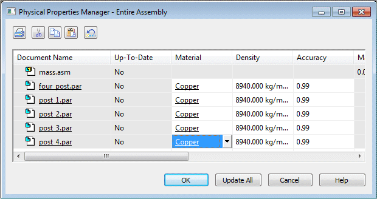
The color of the parts changes to match the material.
Click OK to dismiss the dialog box.
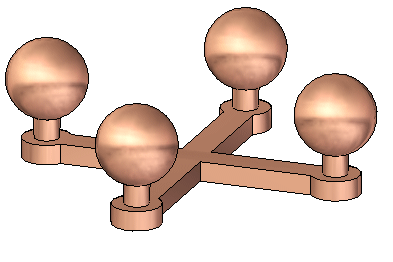
Since the whole assembly is symmetric about the front and right planes, you would expect the center of gravity to be centered in the top view.
Choose the Inspect tab→Physical Properties group→Properties command .
Turn on the Display Symbol for the center of mass and the center of volume. Notice that the mass is 1.74 kilograms. Click Update, and then click Close.
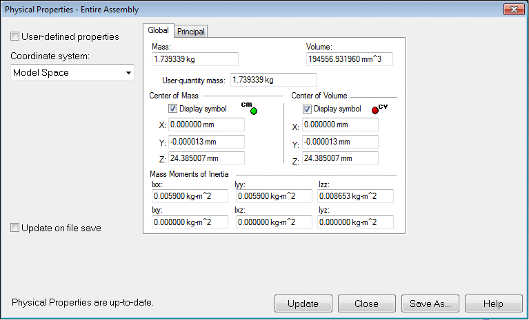
Rotate the view and notice that the center of mass and the center of volume are located in the same position. The center of volume should not change for this assembly for the remainder of the activity. The center of mass will change.
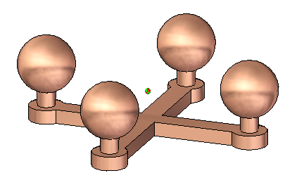
Choose the Inspect tab→Physical Properties group→Properties command .
Click the Principal tab to calculate the principal axes. Turn on the Display Symbol for the principal axes. Click Update, and then click Close.
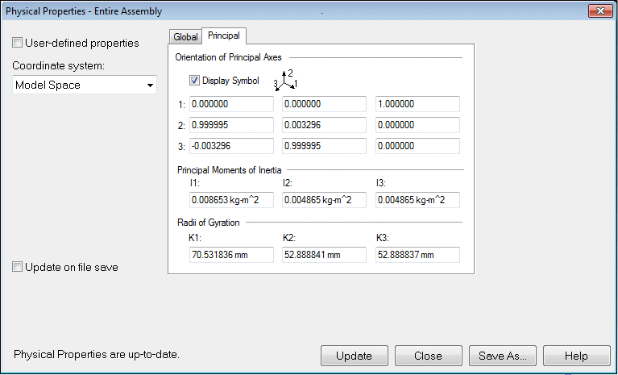
Choose the Inspect tab→Physical Properties group→Properties Manager command .
In the dialog box, set the material for all the parts as shown, and then click Update All. Click OK to dismiss the dialog box.
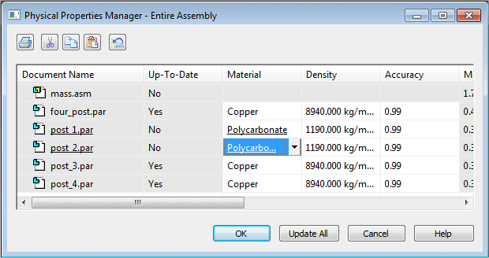
Notice that Polycarbonate is much less dense than Copper. This means the center of gravity will be closer to the two Copper posts.
Choose the Inspect tab→Physical Properties group→Properties command .
Click the Principal tab to calculate the principal axes. Turn off the display symbol for the principal axes. Click Update, and then click Close.
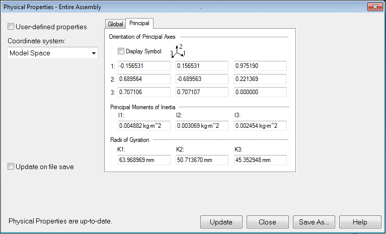
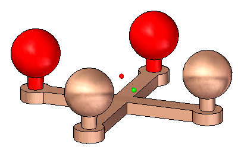
Rotate the view to the top and observe the location of the center of mass.
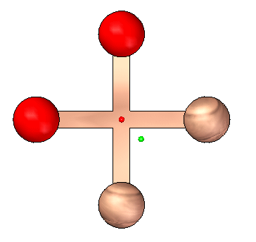
Continue using the Physical Properties Manager. Change the material values of the parts in the assembly and observe how the mass and center of gravity change.
Save and close the assembly. This completes this activity.
In this activity you learned how to change the material of a part using the Physical Property Manager and how to calculate the mass properties for an assembly.
-
Click the Close button in the upper-right corner of the activity window.
Answer the following questions:
-
In a part or sheet metal document, how is the density of the material defined?
-
In an assembly document, how is the density of the material defined?
-
Where is the radii of gyration calculated and the values displayed in an assembly document?
-
In a part or sheet metal document, how is the density of the material defined?
The material table allows you to define the material and density of a part or sheet metal document.
-
In an assembly document, how is the density of the material defined?
The properties manager shows and allows edits to the material properties for the all the assembly components.
-
Where is the radii of gyration calculated and the values displayed in an assembly document?
The radii of gyration is calculated and displayed on the principal tab of the physical properties dialog box.